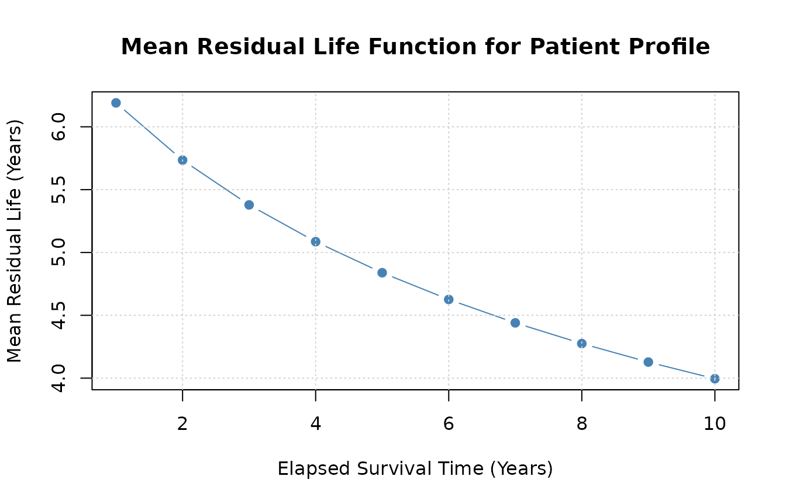
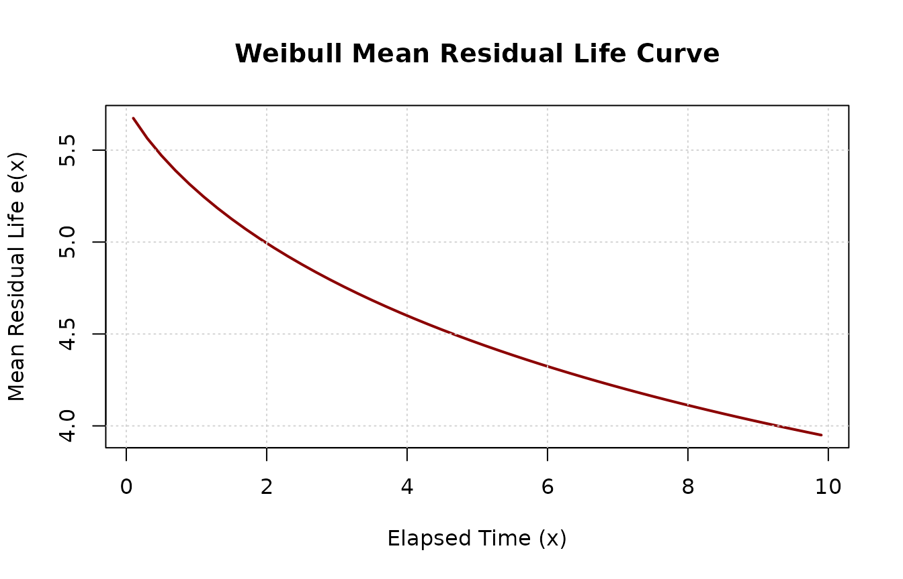

'reslife' Package Demonstration
Source:vignettes/reslife_package_demonstration_vignette.rmd
reslife_package_demonstration_vignette.rmdThe mathematical derivations, integral forms, and distribution specifications implemented in this package are detailed in the companion paper: Wang et al. (2025).
Load the Package
library(reslife)
#> Loading required package: pracma
#> Loading required package: flexsurv
#> Loading required package: survival
#> Loading required package: gsl
#>
#> Attaching package: 'gsl'
#> The following objects are masked from 'package:pracma':
#>
#> Ci, erf, erfc, eta, expint_E1, expint_Ei, fact, hypot, psi, Si,
#> sinc, zeta
library(flexsurv)
library(survival)Demonstration of the reslifefsr Function
The reslifefsr() function calculates residual life
values directly from a fitted flexsurvreg object. It
supports both baseline (intercept-only) models and models with
patient-level covariate profiles via newdata.
Baseline Verification via Numerical Integration
We begin by fitting an intercept-only generalized gamma model
(gengamma.orig) to the breast cancer dataset
bc from flexsurv. We then evaluate the mean
residual life at an elapsed time of 1 year (life = 1).
fs1 <- flexsurvreg(Surv(recyrs, censrec) ~ 1, data = bc, dist = "gengamma.orig")
r <- reslifefsr(obj = fs1, life = 1, type = "mean")
r
#> [1] 7.194108We can verify the accuracy of this analytical derivation against direct numerical integration of the survival function:
# Extract parameters on their natural scale from the fitted model
b <- as.numeric(fs1$res["shape", "est"])
a <- as.numeric(fs1$res["scale", "est"])
k <- as.numeric(fs1$res["k", "est"])
# Define survival function
surv_gengamma <- function(t) {
pgengamma.orig(t, shape = b, scale = a, k = k, lower.tail = FALSE)
}
# Numerical integration
integral_val <- integrate(surv_gengamma, lower = 1, upper = Inf)$value
sx_val <- surv_gengamma(1)
mx_integral <- integral_val / sx_val
all.equal(r, mx_integral)
#> [1] "Mean relative difference: 1.597394e-08"The analytical formula in reslifefsr() matches numerical
integration.
Covariate Models with Multiple Predictors
When a model includes covariates, reslifefsr() evaluates
residual life across patient profiles. We illustrate this using the
bc dataset with an added covariate age:
set.seed(42)
newbc <- bc
newbc$age <- rnorm(nrow(bc), mean = 65 - scale(newbc$recyrs, scale = FALSE), sd = 5)
fsr2 <- flexsurvreg(Surv(recyrs, censrec) ~ group + age, data = newbc, dist = "weibull")Evaluating residual life across the fitted observations returns a vector with one value per observation:
head(reslifefsr(obj = fsr2, life = 4, type = "mean"), 5)
#> [1] 244.6992We can also inspect the median residual life:
head(reslifefsr(obj = fsr2, life = 4, type = "median"), 5)
#> [1] 209.3608Or extract the full summary table (mean,
median, and a custom quantile):
head(reslifefsr(obj = fsr2, life = 4, p = 0.8, type = "all"), 5)
#> mean median percentile
#> 1 244.6992 209.3608 376.0821Predicting on New Covariate Profiles (newdata)
We can evaluate specific patient profiles by passing a
data.frame to newdata:
newdata <- data.frame(
group = c("Medium", "Good", "Poor"),
age = c(43, 35, 39)
)
reslifefsr(obj = fsr2, life = 4, p = 0.6, type = "all", newdata = newdata)
#> mean median percentile
#> 1 13.988900 11.528209 14.370289
#> 2 39.695764 33.514429 41.148687
#> 3 9.325262 7.571392 9.512931reslifefsr() is invariant to column order:
# Reordered columns produce identical results
newdata_reorder <- data.frame(age = c(43, 35, 39), group = c("Medium", "Good", "Poor"))
reslifefsr(obj = fsr2, life = 4, p = 0.6, type = "all", newdata = newdata_reorder)
#> mean median percentile
#> 1 13.988900 11.528209 14.370289
#> 2 39.695764 33.514429 41.148687
#> 3 9.325262 7.571392 9.512931Extra unmodeled columns are safely ignored:
newdata_extra <- cbind(newdata, extra = c(100, 100, 100))
reslifefsr(obj = fsr2, life = 4, p = 0.6, type = "all", newdata = newdata_extra)
#> mean median percentile
#> 1 13.988900 11.528209 14.370289
#> 2 39.695764 33.514429 41.148687
#> 3 9.325262 7.571392 9.512931Error Handling & Input Guards
If required covariates are missing, reslifefsr() informs
the user:
newdata_missing <- data.frame(group = c("Medium", "Good", "Poor"))
reslifefsr(obj = fsr2, life = 4, type = "all", newdata = newdata_missing)
#> Error in `form.model.matrix()`:
#> ! Value of covariate "age" not supplied in "newdata"Similarly, if an invalid factor level is supplied:
newdata_bad_level <- data.frame(group = c("Medium", "Good", "InvalidLevel"), age = c(43, 35, 39))
reslifefsr(obj = fsr2, life = 4, type = "all", newdata = newdata_bad_level)
#> Error in `model.frame.default()`:
#> ! factor group has new levels InvalidLevelPlotting Mean Residual Life over Time
We can evaluate how residual life changes over elapsed time for a specific patient profile:
patient1 <- newbc[1, ]
time_grid <- 1:10
mrl_vals <- sapply(time_grid, function(t0) {
reslifefsr(obj = fsr2, life = t0, type = "mean", newdata = patient1)
})
plot(time_grid, mrl_vals, type = "b", pch = 19, col = "steelblue",
xlab = "Elapsed Survival Time (Years)",
ylab = "Mean Residual Life (Years)",
main = "Mean Residual Life Function for Patient Profile")
grid()
Demonstration of the residlife Function
The standalone function residlife() computes residual
life directly from distribution names and parameter vectors without
requiring a flexsurvreg object.
Supported distributions include: * "exponential" /
"exp" * "weibull" * "gamma" *
"gompertz" * "lognormal" /
"lnorm" * "llogis" * "gengamma" *
"gengamma.orig" * "genf" *
"genf.orig"
Basic Usage with Vectorized Values
residlife() accepts a numeric vector of elapsed
times:
Flexible Parameter Naming & Ordering
Parameter order does not matter as long as names match:
# Unordered names work identically
residlife(values = 5, distribution = "weibull", parameters = c(scale = 6.191, shape = 1.272))
#> [1] 4.451537For distributions with alternative parameterizations like Gamma (rate
vs. scale), residlife() seamlessly converts between
them:
Plotting MRL Directly from residlife
Because residlife() natively vectorizes over
values, generating an MRL curve requires no manual
loops:
times <- seq(0.1, 10, by = 0.2)
mrl_curve <- residlife(values = times, distribution = "weibull", parameters = pars_weibull, type = "mean")
plot(times, mrl_curve, type = "l", lwd = 2, col = "darkred",
xlab = "Elapsed Time (x)",
ylab = "Mean Residual Life e(x)",
main = "Weibull Mean Residual Life Curve")
grid()
References
To cite the reslife package or the theoretical
derivations in publications, please use:
- Wang, Z., Crawford, A., Lee, K. L., Lu, L., & Jaganathan, S. (2025). reslife: Residual Lifetime Analysis Tool in R. arXiv preprint arXiv:2308.07410.
@article{wang2025reslife,
title = {reslife: Residual Lifetime Analysis Tool in R},
author = {Wang, Zekai and Crawford, Andrew and Lee, Ka Lok and Lu, Lin and Jaganathan, Srihari},
journal = {arXiv preprint arXiv:2308.07410},
year = {2025},
url = {https://arxiv.org/abs/2308.07410}
}Session Information
sessionInfo()
#> R version 4.6.2 (2026-10-29)
#> Platform: x86_64-pc-linux-gnu
#> Running under: Ubuntu 26.04.1 LTS
#>
#> Matrix products: default
#> BLAS: /usr/lib/x86_64-linux-gnu/openblas-pthread/libblas.so.3
#> LAPACK: /usr/lib/x86_64-linux-gnu/openblas-pthread/libopenblasp-r0.3.32.so; LAPACK version 3.12.0
#>
#> locale:
#> [1] LC_CTYPE=C.UTF-8 LC_NUMERIC=C LC_TIME=C.UTF-8
#> [4] LC_COLLATE=C.UTF-8 LC_MONETARY=C.UTF-8 LC_MESSAGES=C.UTF-8
#> [7] LC_PAPER=C.UTF-8 LC_NAME=C LC_ADDRESS=C
#> [10] LC_TELEPHONE=C LC_MEASUREMENT=C.UTF-8 LC_IDENTIFICATION=C
#>
#> time zone: UTC
#> tzcode source: system (glibc)
#>
#> attached base packages:
#> [1] stats graphics grDevices utils datasets methods base
#>
#> other attached packages:
#> [1] reslife_0.3.0 gsl_2.1-9 flexsurv_2.3.2 survival_3.8-12
#> [5] pracma_2.4.6
#>
#> loaded via a namespace (and not attached):
#> [1] sass_0.4.10 generics_0.1.4 tidyr_1.3.2
#> [4] lattice_0.23-1 digest_0.6.39 magrittr_2.0.5
#> [7] evaluate_1.0.5 grid_4.6.2 RColorBrewer_1.1-3
#> [10] mvtnorm_1.4-2 fastmap_1.2.0 jsonlite_2.0.0
#> [13] Matrix_1.7-6 mstate_0.3.3 deSolve_1.42
#> [16] purrr_1.2.2 scales_1.4.0 numDeriv_2016.8-1.1
#> [19] textshaping_1.0.5 jquerylib_0.1.4 cli_3.6.6
#> [22] rlang_1.3.0 splines_4.6.2 withr_3.0.3
#> [25] cachem_1.1.0 yaml_2.3.12 otel_0.2.0
#> [28] tools_4.6.2 dplyr_1.2.1 ggplot2_4.0.3
#> [31] assertthat_0.2.1 vctrs_0.7.3 R6_2.6.1
#> [34] lifecycle_1.0.5 muhaz_1.2.6.5 fs_2.1.0
#> [37] ragg_1.5.2 pkgconfig_2.0.3 desc_1.4.3
#> [40] pkgdown_2.2.1 pillar_1.11.1 bslib_0.12.0
#> [43] gtable_0.3.6 glue_1.8.1 data.table_1.18.6.1
#> [46] Rcpp_1.1.2 statmod_1.5.2 systemfonts_1.3.2
#> [49] xfun_0.62 tibble_3.3.1 tidyselect_1.2.1
#> [52] knitr_1.52 farver_2.1.2 htmltools_0.5.9
#> [55] rmarkdown_2.32 compiler_4.6.2 S7_0.2.2
#> [58] quadprog_1.5-8